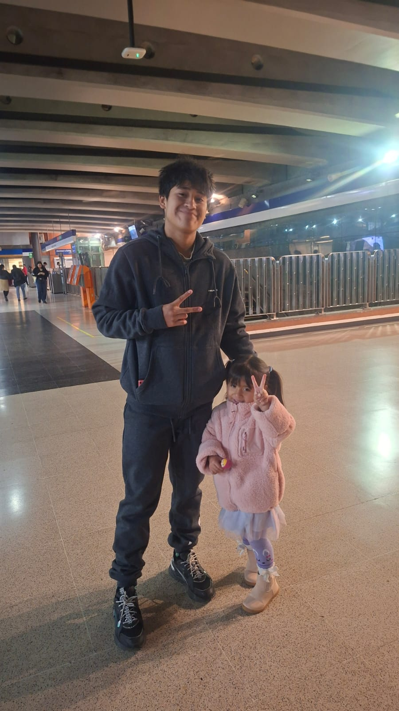

Mi Historia

- Nací en 2010 en un terremoto
- Vine de un colegio malo de Santiago
- Llegó mi hermana con el tiempo que quería
Actualidad

- Reconciliándome con amigos antiguos
- Pasamos de un depa a una casa con el tiempo
- Ahora en tp 3B